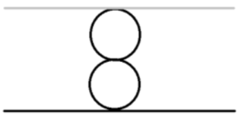
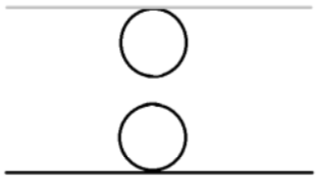
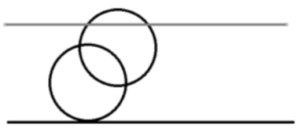

【样例说明】
第一组数据，由奶酪的剖面图可见：
第一个空洞在 (0，0，0) 与下表面相切
第二个空洞在 (0，0，4) 与上表面相切
两个空洞在 (0，0，2) 相切
输出 Yes

第二组数据，由奶酪的剖面图可见：
两个空洞既不相交也不相切
输出 No

第三组数据，由奶酪的剖面图可见：
两个空洞相交且与上下表面相切或相交
输出 Yes

【数据规模与约定】
对于20%的数据，$n = 1，1≤h , r≤10,000$，坐标的绝对值不超过 $10,000$。
对于40%的数据，$1≤n≤8，1≤h , r≤10,000$，坐标的绝对值不超过 $10,000$。
对于80%的数据，$1≤n≤1,000，1≤h , r≤10,000$，坐标的绝对值不超过 $10,000$。
对于100%的数据，$1≤n≤1,000，1≤h , r≤1,000,000,000，T≤20$，坐标的绝对值不超过 $1,000,000,000$。
 Comet OJ
Comet OJ